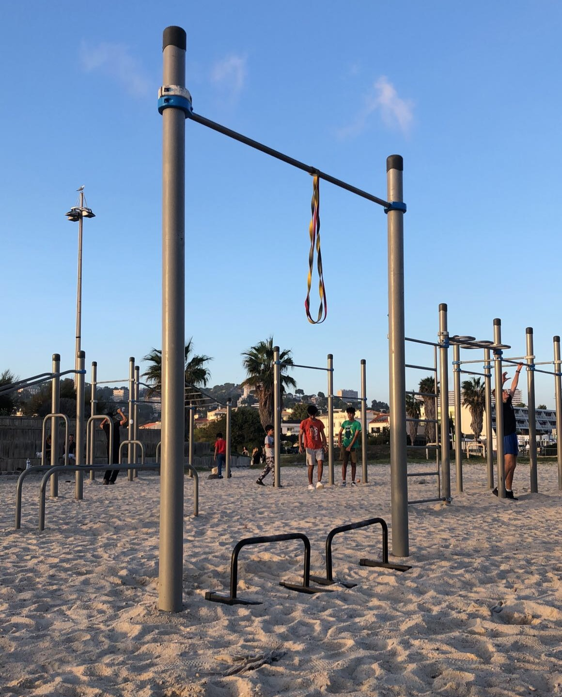

En forme. En meilleure forme. En forme parfaite. Nous sommes toujours plus nombreux à trouver important de nous sentir bien dans notre peau. Faire du sport aide à être en forme et à le rester. Le fitness est très populaire et, chez Fit-SGVG, nous mettons tout en œuvre pour que le sport en club soit encore plus agréable et facile pour vous. Chez nous, vous pouvez faire du sport de manière illimitée, tous les jours de la semaine sans payer le prix fort.
Chez Fit-SGVG, faire du sport en toute autonomie est essentiel. Cela ne veut bien sûr pas pour autant dire que vous devez vous débrouiller tout seul. Nous mettons à votre disposition différents programmes d’entraînement qui vous aideront à atteindre votre objectif.
